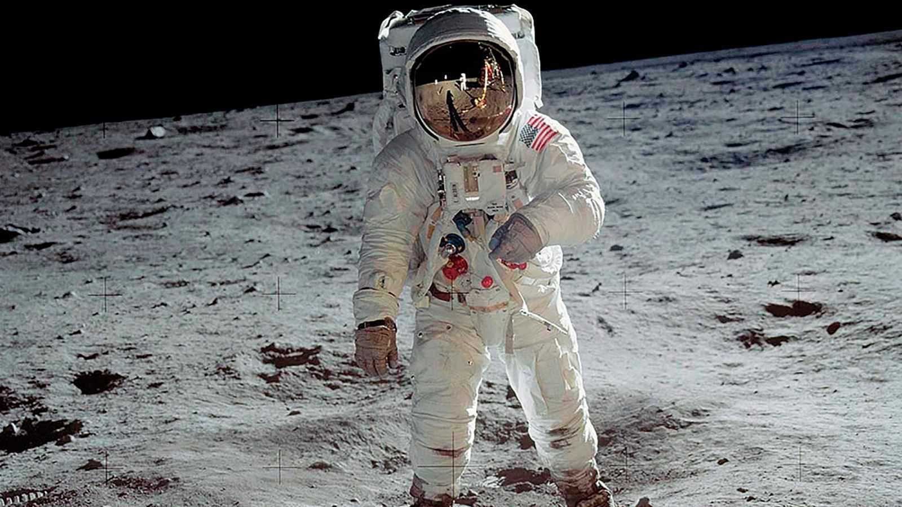

EL HOMBRE CAMINA SOBRE LA LUNA
Un dia como hoy pero de 1969 la especie humana caminó por primera vez en el satélite natural del planeta tierra siendo este hecho el que marcó el siglo XX…..si al leer esto ya gesticulaste negativamente seguramente eres de los que dicen “eso es lo que nos dice la nasa” ó “no llegamos a la luna. El video que mostraron fue un montaje dirigido por stanley kubrick”.
Tengo que decirte antes de seguir...tranquilo si llegamos -“nos engañan y!.” -shhhht llegamos. Quizás la prueba más fehaciente sean los espejos reflectores que las misiones apolo instalaron en la luna. Que sirvieron y siguen sirviendo para medir la distancia exacta del astro a la tierra, si, asi es, es posible si tienes las capacidades técnicas de disparar con un láser a la luna y que por medio de estos espejos se refleje el haz de luz de vuelta al origen.(sería interesante intentarlo alguna vez mmmmm ¿que tan buena punteria tienes?).
En fin, apaga tu parte de cerebro conspiranoico unos minutos, todas las teorías conspiranoicas son mentira ( ejmmm excepto el 9/11).
Así es hace 50 años que llegamos a la luna. En 1969 este mundo era muy diferente. El internet estaba en gestación, no existían los celulares, apenas unos años antes se había transmitido las primeras imágenes a color en tv, los Beatles aún no se separaban. ¿Qué pasó? la ciencia avanzó enormemente en todos los ámbitos pero en el sector aeroespacial no. No hemos vuelto a la luna y ni pensar en algún otro planeta o satélite más lejano.
¿Cuando tendremos nuestras primeras olimpiadas interplanetarias?. ¿Cuando iremos a vacacionar a calisto (satélite de júpiter) ?. ¿Cuando contactaremos vida fuera de nuestro planeta? ó ¿Esperaremos a que ellos nos contacten ?(mmm no me parece buena idea). ¿vamos a colonizar otro planeta antes de que un meteorito, virus, guerra nuclear, zombies, robots asesinos rebeldes dejen inhabitable la tierra? no seria una lastima que la conciencia humana desapareciera del universo , heeeey! eso significa que nunca más nadie podrá deleitarse con el 3 movimiento de la novena sinfonía de Beethoven, que lastima!!.
Por suerte tenemos a nuestro gallo Elon Musk y su empresa spacex, te explico si es que has estado dentro de una cueva esta última década, Spacex es una empresa privada aeroespacial capaz de lanzar automóviles de lujo al espacio y de aterrizar cohetes y reutilizarlos.
Elon Musk quiere que gente común vaya a marte!!! .Compremos un tesla para apoyar a este hombre. (es también CEO de tesla motors)
Y a ti humano del siglo XXI te pregunto..¿ no te gustaría estar en el planeta rojo para ver un amanecer marciano antes de morir?